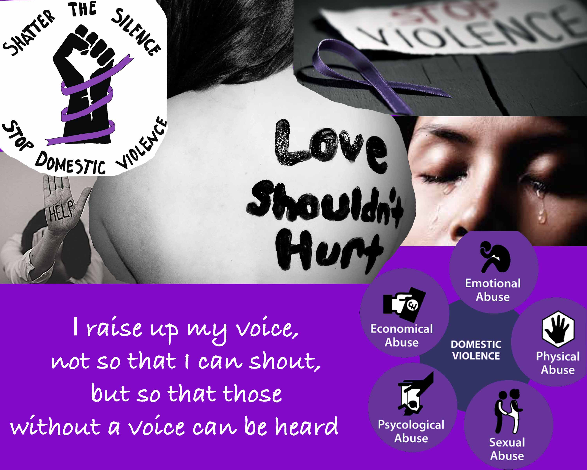

Domestic Violence is a violent or aggressive abuse that happens within the home. It could be physically, mentally, verbally, emotionally, financially and/or sexually. Domestic violence is an epidemic affecting individuals in every community regardless of age, economic status, sexual orientation, gender, race, religion, or nationality. Domestic violence is not love. It is one person in a relationship having power and control over the person.
How do you know if you are involved in Domestic Violence?
Physical Abuse: scratching, biting, grabbing, spitting, shoving, pushing, slapping, punching, throwing objects to hurt or intimidate you, destroying possessions or treasured objects, hurting you or threatening to hurt your children and/or pets, burning, strangling, attacking or threatening to attack with a weapon, and any threats or actual attempts to kill you.
Economic/Financial Abuse: forbidding the victim to work or attend school, sabotaging employment opportunities, jeopardizing employment by stalking or harassing the victim at the workplace, withholding money or giving an allowance, running up debt in the victim's name.
Emotional/Psychological Abuse: name calling, mocking, intimidation, making humiliating remarks or gestures, yelling in your face or standing is a menacing way, manipulating your children, telling you what to do or where you can and cannot go, placing little value on what you say, interrupting, changing topics, not listening or responding, twisting your words, putting you down in front of other people, saying negative things about your friends and family, preventing or making it difficult for you to see friends or relatives, cheating or being overly jealous, shifting responsibility for abusive behavior by blaming others or saying you caused it, monitoring your phone calls, texts, car and computer use.
Domestic violence can be mental, physical, economic or sexual in nature. Incidents are rarely isolated, and usuaully in frequency and severity. Domestic abuse may culminate in serious physical injury or death.
How can you get help?
There is many ways to get help. I usually tell other women to call the police or get up and leave. You can also seek help by calling the National Domestic Violence Hotline at 1-800-799-SAFE.
I do not own these images. All images were found on Google Images.